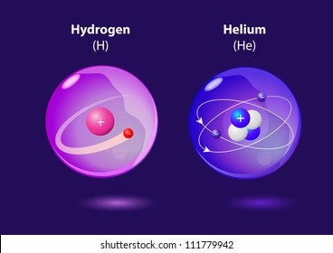

At first, there was nothing in the universe. Well, nothing except dark matter. But suddenly, every speck of the universe's energy jammed into a very tiny point. This extremely dense point exploded with unimaginable force, creating matter and propelling it outward at the speed of light. Astrophysicists dubbed this titanic explosion the Big Bang.
1 minute after the big bang, the base of everything in the universe today also known as quarks, was almost finished. The temperature of the universe was around 10^32 Kelvin, which is an incredible amount of heat. Around 3 minutes after the big bang, the temperature of the universe was still incredibly high at about 10^9 Kelvin.
At this point, everything in the universe was "cooling down". And the base of all the stars, planets etc. we know today were being formed. The universe was expanding to create and contain all of these matter. All the small particles known as quarks that was formed at the start of the big bang started grouping together due to gravity, which formed protons and neutrons. But other than protons and neutrons, there were electrons, flying around in space all alone but could not group with the quarks as the universe was too hot.
Around 10 minutes after the big bang, the protons and neutrons also grouped together to form hydrogen, which is a group of one proton and one neuntron. And there was also helium, which is a group of two protons and two neutrons
About 380,000 years later, the universe was cool enough for the elctrons to finally join in with the protons and neutrons to form more helium and nitrogen, and the universe is basically a bunch of gas.
Over the span of 600 million years, all that happened in the universe was the gases compressing due to gravity. Until another explosion happened due to how dense the gases were and *drum roll* a star was made! Besides a star being made, a lot of new elements like oxygen, carbon, neon, iron, nitrogen etc. This process was then repeated a lot of times, and all sizes of stars were made. Of course, the stars die out too, but when bigger stars die out, they create supernovas, that create even more elements.
Those elements that were made turned into even more interesting stars which also died out and created more supernovas, and formed ice, rock, and some other things. But those rocks are also known as our planets, asteroids, dwarf planets, moons etc.
And all that basically concludes the origin of the things in our univers!